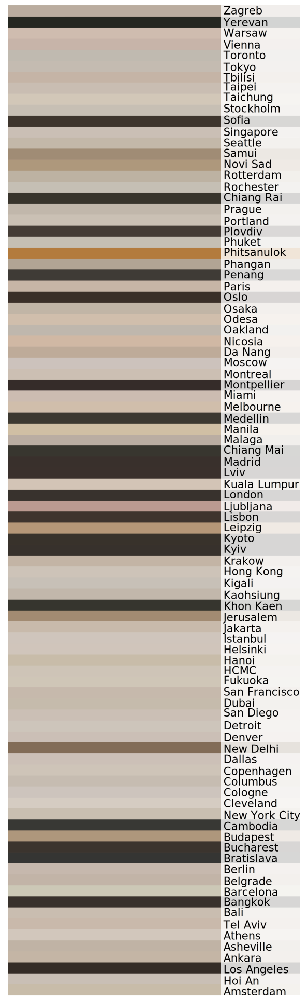

Instagram's Palette vs. the Website's
Instagram reflects the daily atmosphere inside cafés through light, color, and coffee rituals. In contrast, coffee shop websites present a more curated and controlled image. When comparing each city's dominant Instagram tones to their website palettes, a clear visual gap emerged.
Average Instagram Color Profile

Average Website Color Profile
On Instagram, cafés around the world tend to favor warm beiges, muted greens, and soft grays. These images reflect real spaces, styled for comfort and captured with natural light.
In contrast, official café websites lean toward cooler, more restrained palettes. Gray tones, charcoal backgrounds, and white space dominate, creating a sense of controlled minimalism.
This contrast highlights the gap between daily experience and curated image. Instagram captures how cafés feel in everyday life, while websites are designed to shape how they are perceived.